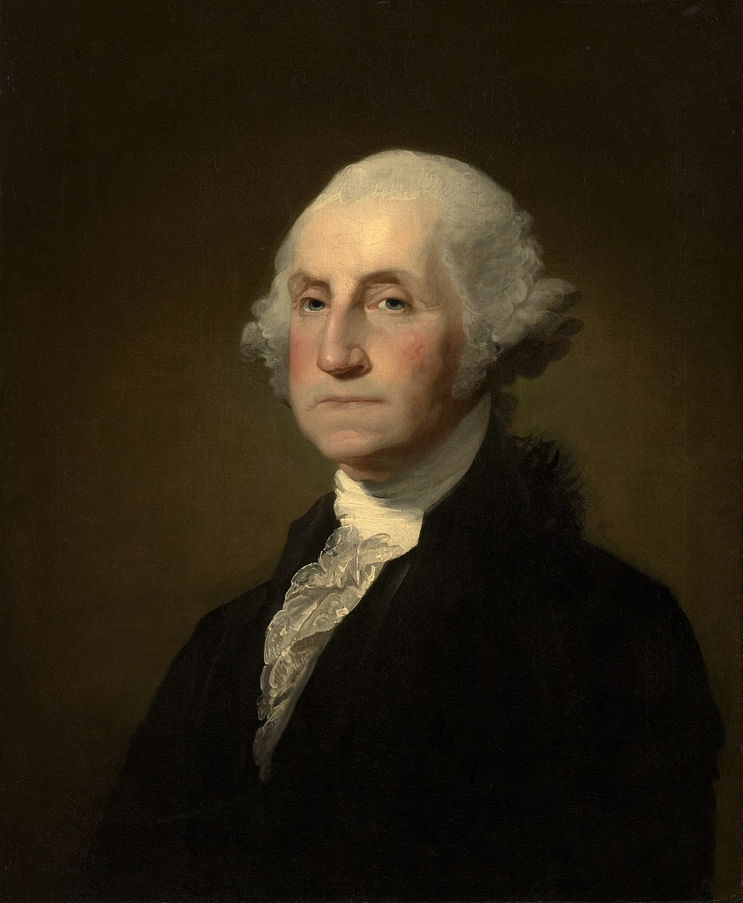
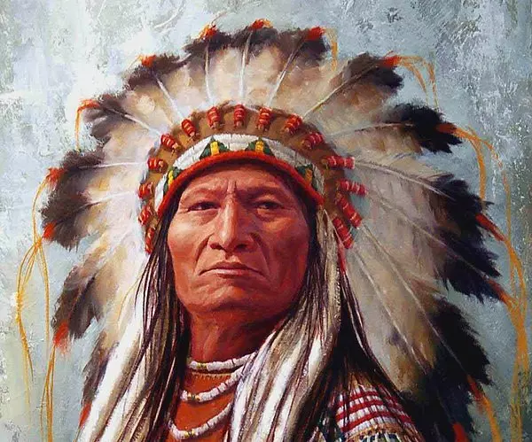

Blog'uma hoş geldiniz
Anasayfa
En son paylaşılan blog
Son Bloglar

George Washington
George Washington (22 Şubat 1732 Westmoreland bölgesi - 14 Aralık 1799 Mount Vernon, Virginia), subay, devlet adamı, Amerikan Bağımsızlık Savaşı'nda Kıta Ordusu'nun başkomutanı ve Amerika Birleşik Devletleri'nin ilk başkan...Devamı için tıklayınız.

Oturan Boğa
Oturan Boğa (Lakotaca: Tȟatȟáŋka Íyotake, İngilizce: Sitting Bull) (1831 - 15 Aralık 1890), ABD ordularına karşı savaşan son Kızılderili kabile şefi. Siyuların Lakota grubundan Hunkpapa kolunun reisi ve 25 Haziran 1876 tarihinde 7. Amerikan Süvari Birliği'ni yenen 3.500 savaşçı...Devamı için tıklayınız.
© Blog 2024